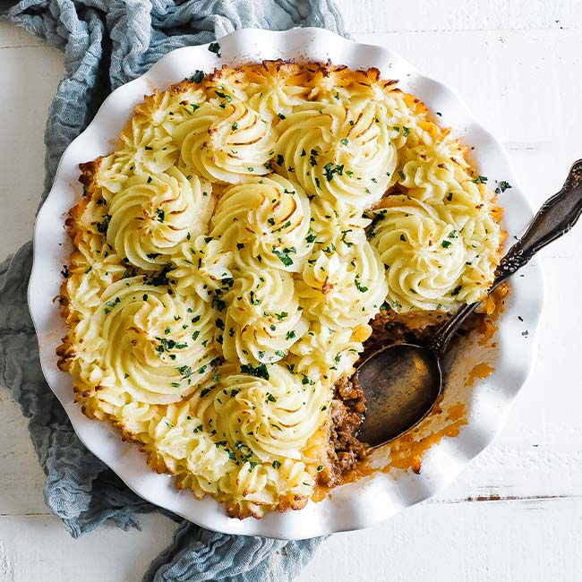

Shepherd's Pie

Desciption
Shepherd’s pie consists of a meat-based filling with vegetables that is topped off with mashed potatoes and then baked in a pie casserole dish.The unique concept of Shepherd’s pie is that when it was created, the ingredients, outside of lamb and potatoes, were based on what was available. If you go to 10 different Irish pubs, you’re going to get 10 different versions of Shepherd’s Pie. I tell you this because while this recipe is absolutely delicious, you can tailor it to make it your own.
Ingredients
- Lamb
- Mirepoix
- Tomato
- Herbs
- MAshed potatoes
Steps
- In a large pan over medium heat with oil sauté the vegetables until cooked and lightly browned.
- Add in the lamb and cook until lightly browned and cooked throughout.
- Mix in tomato paste and then flour to create a roux.
- Pour in some beef stock and then finish the lamb filling with herbs, salt, and pepper, and set aside.
- Boil some potatoes in a large pot of boiling water until cooked.
- Mash the potatoes with different fats and cheese and set them aside.
- Assemble by placing the lamb filling to a bottom of a pie dish or 13×9 casserole dish.
- Top off with mashed potatoes and bake until browned.